 Accès exclusif réservé aux 18 ans et plus | Profitez du jeu en ligne avec responsabilité et modération.
La protection de vos données personnelles est une priorité absolue pour NeutralAd. Cette politique détaille la façon dont nous collectons, utilisons, partageons et protégeons vos informations lors de votre visite sur neutraladvisors.com.
Lors de votre navigation sur NeutralAd, les données suivantes peuvent être collectées :
Vos informations sont utilisées pour :
NeutralAd ne revend jamais vos données à des tiers à des fins commerciales.
Nous utilisons des cookies pour personnaliser votre expérience, analyser l’audience et vous proposer des contenus adaptés. Vous pouvez à tout moment gérer vos préférences de cookies en consultant notre politique de cookies.
Vos données peuvent être partagées uniquement :
Nous ne vendons ni ne louons vos données personnelles à des annonceurs ou à des plateformes de jeux.
NeutralAd met en place des mesures techniques et organisationnelles adaptées pour protéger vos données contre tout accès, usage ou divulgation non autorisés (cryptage, pare-feu, contrôle d’accès, etc.). Seuls les membres autorisés de l’équipe NeutralAd peuvent accéder aux données strictement nécessaires à leurs missions.
Vos données sont conservées pour la durée strictement nécessaire aux finalités décrites dans cette politique, ou pour respecter les obligations légales. Les informations issues des cookies sont conservées pour une durée maximale de 13 mois.
Conformément au Règlement Général sur la Protection des Données (RGPD), vous disposez des droits suivants :
Pour exercer vos droits ou pour toute question concernant vos données, contactez-nous à : info@neutraladvisors.com
NeutralAd ne s’adresse pas aux mineurs et ne collecte pas sciemment de données concernant des personnes de moins de 18 ans. Si vous pensez qu’un mineur nous a transmis des informations, merci de nous contacter afin que nous puissions les supprimer rapidement.
NeutralAd peut contenir des liens vers des sites tiers partenaires ou référencés. Nous ne sommes pas responsables de la politique de confidentialité ou du contenu de ces sites. Nous vous recommandons de consulter leurs propres politiques lors de votre navigation.
Cette politique peut évoluer à tout moment pour refléter des changements législatifs ou techniques. La date de la dernière mise à jour figure ci-dessous : nous vous encourageons à la consulter régulièrement.
Dernière mise à jour : 25 janvier 2025.
© 2025 NeutralAd France | neutraladvisors.com | Tous droits réservés.